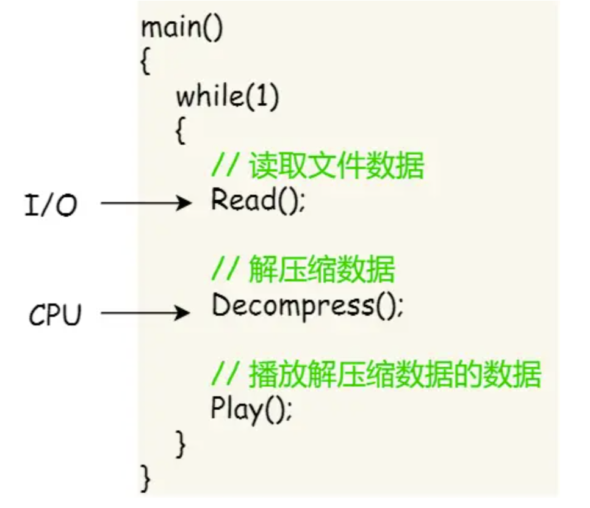
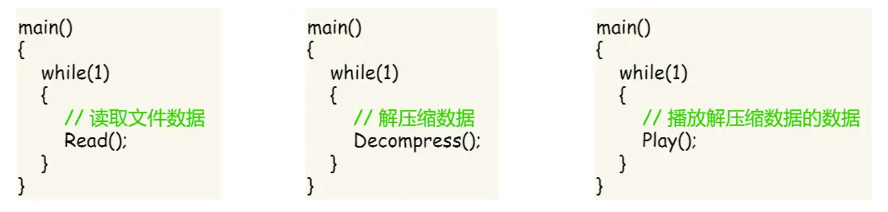

线程概念和多线程模型
线程概念和多线程模型
引例
比如我们要编写一个看的视频软件。要实现的功能有：
- 从视频文件中读取数据。
- 对读取的数据解压缩。
- 把解压缩后的视频播放出来。
对于单进程的程序而言，会有如下实现方式：
但是这个方法存在问题：
- 播放出来的视频和声音会不连贯，因为当CPU计算能力不够强的时候，Read进程就可能阻塞了，这样需要等半天才能将数据解压，播放。
- 各线程直接不能并发进行，影响资源利用率。
对于多进程的程序而言，会有如下实现方式：
但是这个方法仍然存在问题：
- 进程之间应该如何通信？
- 系统维护进程的开销比较大，如创建进程时需要分配资源，初始化PCB。终止进程时需要释放资源，删除PCB。
那到底如何解决呢？我们需要一种新的实体，这个实体满足：
- 实体之间共享数据和资源。
- 实体之间可以并发运行。
这个新的实体就是线程，线程直接可以并发执行。
什么是线程，为什么要引入线程？
线程是一个基本的CPU执行单元，也是程序执行流的最小单位。引入线程之后，不仅是进程之间可以并发，进程内的各线程之间也可以并发，从而进一步提升了系统的并发度，使得一个进程内也可以并发处理各种任务。（如QQ视频。文字聊天，传文件）

引入线程后，进程只作为除CPU之外的系统资源的分配单元。（如打印机。内存地址空间等都是分配给进程的）。线程则作为处理机的分配单元。
引入线程机制后，有什么变化？
- 资源分配、调度
- 传统进程机制中，进程是资源分配、调度的基本单位。
- 引入线程后，进程是资源分配的基本单位，线程是调度的基本单位。
- 并发性
- 传统进程机制中，只能进程间并发
- 引入线程后，各线程间也能并发，提升了并发度。
- 系统开销
- 传统的进程间并发，需要切换进程的运行环境，系统开销不是很大
- 线程间并发，如果是同一个进程内的线程切换，则不需要切换进程环境，系统开销小。
- 引入线程后，并发所带来的系统开销小。
线程特点
- 线程是处理机调度的单位。
- 多CPU计算机中，各个进行可占用不同的CPU
- 每个线程多有一个线程ID、线程控制块（TCB）
- 线程也有就绪，阻塞，运行三种基本状态。
- 线程几乎不拥有系统资源。
- 同一进程的不同线程间共享数据资源。
- 由于共享内存地址空间，同一进程中的线程间通信甚至无需系统干预
- 同一进程中的线程切换，不会引起进程切换。
- 不同进程中的线程切换，会引起进程切换。
- 切换同进程内的线程，系统开销很小。
- 切换进程，系统开销很大。
多线程模型
一对一模型
一个用户级线程映射到一个内核级线程，每个用户进程有与用户级线程同数量的内核级线程。

优点：当一个线程被阻塞后，别的线程还可以继续执行，并发能力强。多线程可以在多核处理机上并行执行。
缺点：一个用户进程会占用多个内核级线程，线程切换由操作系统内核完成，需要切换到内核态，线程管理的成本高，开销大。
多对一模型
多个用户级线程映射到一个内核级线程，且一个线程只被分配一个内核级线程。

优点：用户级线程的切换在用户空间即可完成，不需要切换到核心态，线程管理系统开销小，效率高。
缺点：当一个用户级线程被阻塞后，整个进程都会被阻塞，并发度不高。多个线程不可在多核处理机上并行运行。
多对多模型
多对多模型：n用户级及线程映射到m个内核级线程(n >= m)。每个用户进程对应m个内核级线程。克服了一对一模型线程调度消耗大和多对一模型并发度不高的缺点。

本博客所有文章除特别声明外，均采用 CC BY-NC-SA 4.0 许可协议。转载请注明来源 MyAKDreamのBlog！
相关推荐

2025-04-10
进程概述
进程概述说明 如果只想了解操作系统应用： 熟悉进程组成，概念 如果想深入学习操作系统： 进程组成，概念，特点 概念进程（Process）是程序关于某数据集合的一次运行活动，由程序代码、数据及进程控制块（PCB）组成。它不仅是系统资源（如内存、文件、CPU时间）的分配单元，也是并发执行的基本实体。 程序：静态的，就存放在磁盘里的可执行文件，如QQ.exe。 进程：动态的，是程序的一次执行过程，如同时执行多次QQ程序。 同一个程序多次执行会对应多个进程。 进程的组成PCB当一个进程被创建时，操作系统产生一个对应数据结构：PCB(Process Control...
2025-04-16
进程控制
...
2025-04-16
进程通信
进程通信概述进程间通信（IPC）是指两个进程之间产生数据交互。 为什么进程需要操作系统支持进程是分配系统资源的单位（包括内存地址空间），因此各进程拥有的内存地址空间相互独立。 为了保证安全，一个进程不能直接访问另一个进程的地址空间。 共享存储为了避免出错。各个进程对共享空间的访问应该是互斥的。各个进程可使用的操作系统内核提供的同步互斥工具。（如P，V操作） 共享存储分为基于数据结构的共享： 基于数据结构的共享：比如共享空间里只能放一个长度为10的数组。这种共享方式速度慢、限制多，是一种低级通信方式。 基于存储区的共享：操作系统在内存中划出一块共享存储区，数据的形式，存放的位置都由通信进程控制，而不是操作系统。这种共享方式的速度很快，是一种高级通信方式。 消息传递进程间的数据交换以格式化的信息为单位。进程通过操作系统提供的发送消息/接收消息两个原语进行数据交换。 直接通信方式 进程P向进程Q直接发送消息： 进程P先将向进程Q发送的数据封装为一个Message 进程P执行发送原语：Send(Q,...
2025-04-16
进程状态和转换
...
2025-04-16
线程的实现
...
2025-04-16
进程调度
...